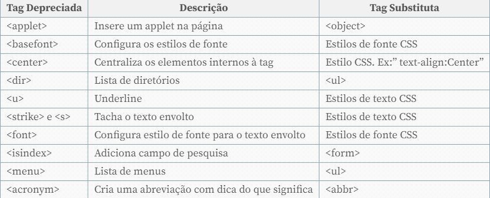

REPOSITORIO PUBLICO DO PROFESSOR
- github.com/gustavoguanabara
- gustavoguanabara.github.io
QUANDO SURGIO A INTERNET E PORQUE?
A INTERNET vem da ARPANET durante a GUERRA para PROTEGER CENTRO MILITARES.
OQUE É DOMINIO E HOSPEDAGEM?
- Dominio é o nome do site que você paga anualmente para ter.
- Hospedagem é onde você hospeda seu site que você paga mensalmente.
-------------------------------------------------
| www.github.com/gustavoguanabara |
-------------------------------------------------
Sub Dominio.DOMINO.TLD/CAMINHO
QUAL A DIFERENÇA ENTRE HMTL, CSS E JAVA SCRIPT?
- HTML é "Conteudo" que vai os textos, imagens, videos e tabelas etc...
- CSS é "Estilo" que vai as cores, sombras, tamanhos e posicionamentos etc...
- JS -> Java Script é "Interetividade" que são os botoes, menu e animações etc...
OQUE É "FRONT-END","BACK-END" E "FULL STACK"?
Front-end: Motorista de ônibus
Back-end: Cobrador
Full stack: Motorista que cobra a passagem
Oque é semantica?
- A semântica no HTML envolve o uso apropriado de tags para dar significado ao conteúdo
Tags retiradas e tags substitutas:
Oque é listas OL e UL?
Listas OL são listas ordenadas, que seria colocando numeros. Ex:
- Acordar
- Tomar café
- Escovara os dentes
- Estudar
- Almoçar
Listas UL são listas desordenada, que seria lista com pontinhos. Ex:
- Estudar
- Descanso
- Café da tarde
- Exercicio
- Estudar
Links e Âncoras.
Para por um link você usa a tag <a>, e para que quando clicar nesse link abrir em outra abá você usa (target='_blank' rel='external').Ex:
- Se inscreva no meu canal no YouTube de jogos clique aqui
- Siga-me no Instagram clique aqui
Links internos
Links internos é quando eu coloco um link para levar para outra pagina. Ex:
Para ir para a segunda pagina clique aqui.
Para ir para a abá de prints de estudo clique aqui
Como colocar audio?
O jeito mas simples para por audio é com o comando: <audio src="audio" controls></audio>
O jeito mas complexo: <audio preload="metadata" controls>
<source src="audio" type="audio/tipo do audio"
Comando na pratica
Comando mas simples:
Comando mas complexo:
Hospedagem própria
A hospedagem própria não é recomendada, pois gasta muito o dinheiro do seu cliente. mas aqui está um exemplo de como é:
Jeito mas simples:
Jeito mas complexo:
Comandos usados: <video controls width="tamnaho" src="mida"></video>, jeito mas simples
Jeito mas completo: <video width="tamanho" poster="banner" controls>
<source src="midia" type="video/tipo da midia"> </video>
O jeito mas recomendado de por vídeo
Para por o video do YouTube ou do Vimeo você vai em compartilhar depois em incorpora.
Direto do Vimeo:
Direto do YouTube:
Observação, com o YouTube quando você pausa mostra outros video, Isso não pode ser muito legal para seu cliente.
HARMONIA DE CORES
Cores Primarias
- Amarelo
- Vermelho
- Azul
Cores Segundarias
- Laranja
- Violeta
- Verde
Cores Terciárias
- Amarelo-esverdeado
- Amarelo-alaranjado
- Vermelho-alaranjado
- Vermelho-arroxeado
- Azul-arroxeado
- Azul-esverdeado
Como Capturar Cores da Tela?
Colorzila - extenção para copiar a cor de qualquer site
ANATOMIA DO TIPO
Para ver as imagens da anatomia vá para prints de estudo
Tamanho de fonte e suas medidas
As fontes tem as medidas absolutas e as medidas relativas
Medidas Absolutas
- cm
- mm
- im
- px
- pt
- pc
Medidas Relativas
- em
- ex
- rem
- vw
- vh
- %
16px geralmente é igual 1em, as medidas px e em são recomendas pela W3C.
Peso, estilo e shorthand font
peso da fonte = fonte-weight
Valores do peso da fonte
- lighter
- normal
- bold
- bolder
- 100 - 900
Shortthand font
Shortthand é uma mãozinha para diminuir o codigo de fontes, só que tem que ser feito na sequencia que seria:
- font-style
- font-weight
- font-size
- font-family
Exemplo:
font-family: 'Work Sans', sans-serif;
font-weight: bolder;
font-size: 3em;
font-style: italic;
E para deixar esse comando curto só usar: font:italic bolder 3em 'Work Sans', sans-serif;
Usando fontes externas baixadas
Tipos de format()
- opentype (otf)
- truetype (ttf)
- embedded-opentype
- truetype-aat (Apple Advanced Typography)
- svg
Usando o id com CSS
Em HTML é id, em CSS é # (Só pode um elemento). Em HTML é Class, em CSS é . (pode vários elementos)